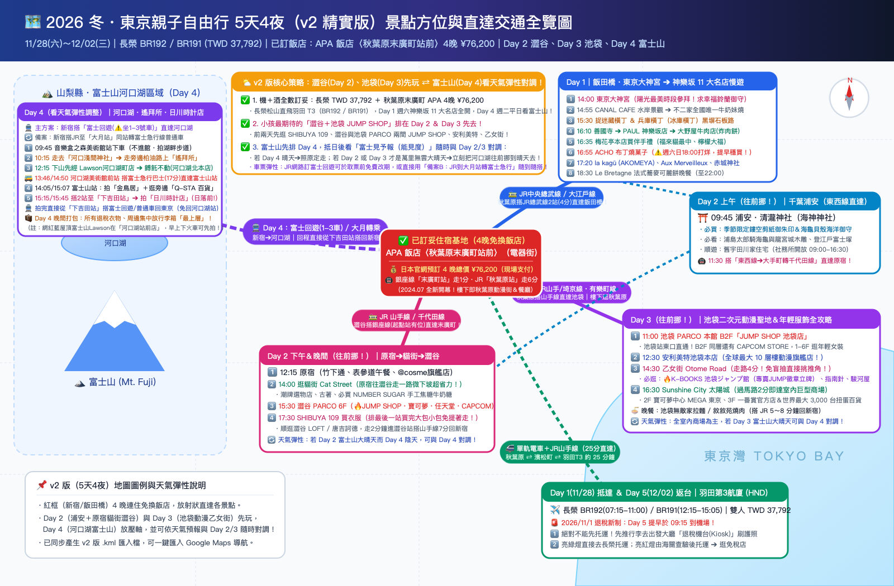

・去程 11/28 (六)：
BR192（07:15 TSA T1 ➔ 11:00 HND T3）・回程 12/02 (三)：
BR191（12:15 HND T3 ➔ 15:05 TSA T1）・雙人含稅總價：TWD 37,792
・官網 4 晚總價：76,200 日圓（含稅・當場支付）
・神動線：門口 1 分鐘銀座線「末廣町站」（澀谷一班車直達回飯店！）、走路 6 分鐘 JR 秋葉原站（2站4分鐘直達飯田橋神樂坂）！
Day 1 週六神樂坂 11 大名店 100% 全開零公休；Day 2 逛澀谷、Day 3（週一）逛池袋、Day 4（週二平日）去富士山，且可依天氣隨時對調！
🎯 選擇 5 天 4 夜出發日期（自動換算星期與店家公休提醒）
預設為已訂妥機票與飯店檔期 11/28（六）～ 12/02（三），亦可切換其他日期檢視對應星期與注意事項：
🗺️ 2026 冬・東京父女 5天4夜（v2 版）景點方位與直達交通路線圖
以已訂妥的「APA 飯店〈秋葉原末廣町站前〉」為住宿基地，一眼看懂 5 天所有願望景點的相對方位、直達電車與天氣彈性對調策略：

📍 點擊下方任一景點／飯店，立即切換 Google 地圖實景與導航
左側清單已按 v2 版最新順序（已訂飯店 ➔ Day 1 東京大神宮＆神樂坂 ➔ Day 2 浦安＆澀谷 ➔ Day 3 池袋 ➔ Day 4 河口湖富士山 ➔ Day 5 羽田）排列：
🧭 v2 每日行程「多點串聯路線」一鍵開啟 Google Maps
在手機上點擊以下連結，可直接叫出當日所有景點串聯路線規劃：
📥 如何把 v2 專屬標記檔匯入您的「Google 我的地圖」？
同目錄下已為您建立好包含所有推薦飯店＋v2 版 Day 1～5 全部景點座標與備註的 2026東京5日遊_Google我的地圖匯入檔_v2.kml，只需 3 步驟即可同步到手機 Google Maps App：
- 電腦開啟 Google 我的地圖 (Google My Maps)，點選左上角「建立新地圖」。
- 在左側圖層點擊「匯入」，選擇目錄下的
2026東京5日遊_Google我的地圖匯入檔_v2.kml上傳。 - 匯入後，所有景點會自動依 v2 版 Day 1～Day 5 分類標記！打開手機版 Google Maps App ➔ 底部「已儲存」➔ 滑到最下方「地圖」，即可在東京街頭隨時看著標記走！
🗻 河口湖＆富士吉田全攻略 ＋ 天氣機動對調秘訣
🌤️ 如何利用「Day 2 澀谷、Day 3 池袋、Day 4 富士山」看天氣彈性調整？
先把澀谷（Day 2）和池袋（Day 3）排在前面，除了能讓女兒一到東京就先買到喜歡的冬裝與 JUMP SHOP 周邊外，更棒的是這兩天都是東京都心行程，完全不需要事先預訂車票！
抵達東京的第一天（Day 1）晚上，查詢日本網站「富士見予報（富士山能見度指數）」：
・若 Day 4 預報能見度 8～10 級（大晴天） ➔ 照原定計畫 Day 2 澀谷、Day 3 池袋、Day 4 富士山。
・若 Day 4 預報多雲或下雨，反而是 Day 2 或 Day 3 大晴天 ➔ 直接把富士山往前挪到晴天的那一天！（若在 JR 東日本官網訂富士回遊號，取票前可於網路免費改期一次；或直接改搭下方「備案 B：JR 到大月站轉乘富士急行線」，隨到隨搭完全免搶票！）
💡 關於「河口湖 音樂盒之森美術館」門票與不入館優勢：
美術館入館門票為平日成人 ¥1,800、高中生/大學生 ¥1,300（週六日及國定假日為成人 ¥2,100、高中生 ¥1,600；每週二、週三公休）。既然您本來沒有打算買票進去，純粹把它當作早上的「公車下車起點」並走外圍免費的湖畔步道，不僅立省 ¥3,100 門票、直接多出 1.5 小時的充裕時間，而且就算選在週二或週三（美術館公休日）去河口湖，外圍湖畔步道與紅線公車、甲府線公車也全部照常開放通行，完全不受影響！
🚆 新宿 ⇄ 河口湖／下吉田 鐵道主案與備案
- ・乘車地點：JR 新宿站 ➔ 直達河口湖站（約 1 小時 53 分）
- ・⚠️ 車廂鐵則：一定要預訂並搭乘「第 1～3 號車廂」！第 4～12 號車廂是併結的「梓號 Azusa / 甲斐路號 Kaiji」，會在大月站切離開往甲府，坐錯車廂會被載去甲府！
- ・建議去程：07:30（富士回遊 3 號）或 08:30（富士回遊 7 號）新宿發車
- ・建議回程：直接從「下吉田站」或「富士山站」上車回新宿！（例如 17:00 或 17:47 從下吉田站發車直達新宿，完全不用再走回頭路去河口湖站！）
- ・第一段（JR 中央線）：從新宿搭 JR 特急「Kaiji / Azusa」（班次極多，約 60 分鐘）或 JR 中央線快速至「大月站（Otsuki）」。
- ・第二段（富士急行線）：在大月站內順著指標刷 IC 卡（Suica/PASMO）轉乘「富士急行線」普通車（約 55 分鐘）或富士急行特急至河口湖站。
- ・優勢：就算臨時看天氣決定改期、沒買到富士回遊號，這招只多花約 15～20 分鐘，且回程從「下吉田站」搭普通車到大月站更是每 30 分鐘就有一班！
🔍 河口湖＆富士吉田 3 大實戰關鍵（含老辣妹直達公車秘訣）：
- 下山去「餺飥不動河口湖北本店」與「Lawson」的順序：從遙拜所（天空鳥居）下山回到河口淺間神社後，往美術館方向走回來的路上（707號縣道），會先經過「Lawson 河口湖町店」➔ 再往前走 5 分鐘（400m）就到「餺飥不動茶屋 河口湖北本店」！（💡 若想拍「藍底招牌＋正後方富士山」網美照，是「Lawson 河口湖站前店」，早上出河口湖站等公車時走 3 分鐘就能先拍！）
- 🚌 老辣妹推薦「河口湖美術館前站」搭公車 17 分鐘直達「富士山站」：吃完不動茶屋往湖畔走約 10 分鐘（經過音樂盒之森美術館再往南走 300m 到「河口湖美術館」門口），在「河口湖美術館前（Kawaguchiko-bijutsukan-mae）」站搭乘富士急行路線巴士「甲府線（往 富士山駅）」！下午有
12:55、13:46、14:50班次（老辣妹搭的是 14:50，因為您不進音樂盒美術館，甚至能提早搭上 13:46 那班！），車程僅 17 分鐘、車資 ¥440，免在河口湖站換車，直接坐到「富士山車站」！ - ⚠️ 防天黑提醒（11月底 16:25 日落）：因為不進音樂盒美術館，若搭上
13:46的直達公車，14:03就抵達「富士山站」了！拍完金鳥居、逛完旁邊的 Q-STA 百貨買伴手禮，15:00左右搭 2 站電車（4分鐘）到「下吉田站」拍日川時計店，時間超級充裕！（即使慢慢吃到搭14:50公車，15:07到富士山站，只要在15:35前搭車去下吉田站也完全來得及在日落前拍完！）
🏨 確定入住基地：APA 飯店〈秋葉原末廣町站前〉（電器街）
アパホテル〈秋葉原末広町駅前〉（電気街）｜東京都千代田區外神田 3-15-7｜2024 年 7 月全新開幕！
距離東京 Metro 銀座線「末廣町站（1、3號出口）」步行僅 1 分鐘、JR「秋葉原站（電器街口）」步行 6 分鐘。4 晚房價明細：11/28(六) ¥30,200、11/29(日) ¥15,000、11/30(一) ¥14,000、12/01(二) ¥17,000，合計 ¥76,200（含稅，約 NT$16,000，現場刷卡或付現皆可）！從飯店出發去 5 天景點全部超順：
1. JR九州飯店 Blossom 新宿
JR Kyushu Hotel Blossom Shinjuku
- ・推薦原因：位於安靜安全的南口代代木方向，走去搭 JR 或利木津巴士只要 3 分鐘，完全避開歌舞伎町。
- ・房間優勢：標準雙床房（Twin Room）約 22～25㎡，配有大面積落地窗與獨立淋浴泡澡空間（非傳統一體成型塑膠浴缸），父女入住非常舒適自在。
- ・周邊機能：巷口即有 Lawson、全家、星巴克、麥當勞與藥妝店。
2. 小田急世紀南悅酒店
Hotel Century Southern Tower
- ・推薦原因：就在 Busta 新宿正對面，沿著高島屋連通道走即可抵達。羽田機場利木津巴士直接停在飯店大廳樓下！
- ・房間優勢：大廳在 20 樓，客房全部在 22～35 樓，視野極佳，冬季晴天甚至有機會從高樓層遠眺富士山或東京夜景。
- ・周邊機能：緊鄰新宿高島屋、NEWoMan 百貨、藍瓶咖啡（Blue Bottle）。
3. 新宿燦路都廣場大飯店
Hotel Sunroute Plaza Shinjuku
- ・推薦原因：就在 JR 九州 Blossom 飯店隔壁，共享完全相同的黃金地理位置，但房價通常更親民一些。
- ・房間優勢：羽田機場利木津巴士同樣直達飯店門口，雙床房乾淨隔音佳，大廳設有自助行李寄放櫃，服務成熟穩定。
4. 三井花園飯店神宮外苑東京普米爾
Mitsui Garden Hotel Jingugaien Tokyo Premier
- ・推薦原因：若不喜歡新宿大站的繁忙感，這間位於新宿往東 2 站的「千駄谷／信濃町」，往西 2 站到新宿、往東 3 站就到飯田橋（東京大神宮＆神樂坂）！
- ・房間優勢：2019 年底開幕，每間客房都有戶外陽台，樓下有超香的 R Baker 烘焙坊，且附設日式大浴場，冬天逛完街泡湯超享受。
♨️ 覺得新宿大飯店太貴？精選 3 間「安全區＋雙床房＋免費大浴場」APA 飯店
⚠️ 帶女兒住 APA 的兩大選店原則：① 絕對避開「歌舞伎町」內的兩間 APA（環境較複雜）；② 房型請務必訂「Twin Room（雙床房，約 14～18㎡）」，一人一張獨立單人床，空間比單張標準雙人床（11㎡）寬敞許多！
APA 飯店＆度假村〈西新宿五丁目站塔〉
APA Hotel & Resort Nishishinjuku-Gochome-Eki Tower
- ・位置：大江戶線「西新宿五丁目站」A2 出口步行 1 分鐘，搭車 4 分鐘（2站）即達新宿站，完全遠離歌舞伎町。
- ・大浴場：附設免費人工溫泉大浴場「玄要之湯」與半露天風呂，冬天泡湯超解乏！
- ・晚上去哪玩：走路 10 分鐘（或搭 1 站）就能去東京都廳看免費巨型光雕投影秀（演到 21:30）＋45 樓免費展望台夜景；樓下即有 Lawson 超商與餐廳。
APA 飯店〈飯田橋站南〉
APA Hotel Iidabashi-Eki Minami
- ・位置：位於東京頂級文教安全區，「飯田橋站」步行 2 分鐘。
- ・景點神動線：下樓走路 3 分鐘就到「東京大神宮」與「神樂坂」！搭總武線 9～11 分鐘直達新宿；搭東西線 22 分鐘免轉車直達「浦安・清瀧神社」；搭有樂町線 9 分鐘直達「池袋」！
- ・晚上去哪玩：晚上 8 點後神樂坂商店街餐廳、藥妝、超市全開，散步還能去東京巨蛋城（Tokyo Dome City）看冬季大型聖誕燈飾！
APA 飯店〈新宿御苑前〉
APA Hotel Shinjuku-Gyoemmae
- ・位置：丸之內線「新宿御苑前站」步行 1 分鐘；從 JR 新宿站南口／Busta 新宿沿大馬路散步約 9～10 分鐘可達。
- ・大浴場：B1F 附設免費人工溫泉大浴場「玄要之湯」。
- ・晚上去哪玩：正對皇室庭園「新宿御苑」，治安單純安靜；晚上可從新宿高島屋、伊勢丹、BICQLO（Bic Camera）一路逛街吃拉麵散步回飯店。
✈️ 長榮航空「松山 TSA ⇄ 羽田 HND」航班明細與價格
💰 雙人來回含稅總價：TWD 37,792（平均 NT$18,896 / 人・立省 NT$1,454！）🚨 2026/11/1 日本退稅新制上路！Day 4 打包與 Day 5 羽田實戰攻略
新制首月必看重點11/28～12/02 出發剛好遇上日本退稅新制（先付含稅價、機場確認後退稅 Refund Method）上路滿月！對行程時間有「一好一壞」的影響：
取消「消耗品 50 萬上限」與「透明密封袋包裝」！在 SHIBUYA 109、PARCO、安利美特或藥妝店購物時，先付 10% 含稅價，店員只需掃描護照將資料上傳雲端，不用再排隊等店員封袋，市區逛街反而更省時間。
抵達羽田機場第 3 航廈時，「絕對不能先去櫃台托運行李」！必須先推著行李去出發大廳的退稅機台（Kiosk）掃護照：亮綠燈可直接去托運；亮紅燈則需當場打開行李箱給海關檢查商品。配合 BR191（12:15 起飛），請於 09:15 抵達羽田 T3！
雖然沒有透明密封袋，但退稅商品仍規定不可在日本境內拆封消耗，且須帶出境。Day 4 最後一晚打包時，請把所有退稅買的衣服、動漫周邊、藥妝集中在同一咖行李箱的最上層，萬一機場抽中紅燈，拉開拉鍊 30 秒就能驗完！